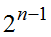
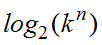
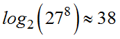
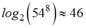
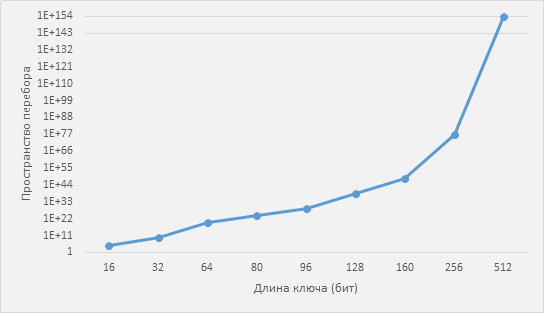

К методам криптоанализа, основанным на переборе ключей, обычно относят два метода: метод полного перебора ключей и атака по словарю.
Метод полного перебора ключей заключается в том, что атакующий последовательно перебирает все возможные ключи алгоритма шифрования пока не найдет искомый. Если длина ключа алгоритма составляет n бит, то среднее количество ключей, которые нужно перебрать, составляет . Достоинством полного перебора является его универсальность, низкая требовательность к исходным данным и возможность распараллеливания путем разделения всего пространства ключей на отдельные секторы. Основным недостатком метода полного перебора является невозможность перебора ключей современных алгоритмов из-за экспоненциального роста сложности в зависимости от длины ключа. Наиболее успешный пример применения метода полного перебора — это взлом блочного алгоритма шифрования DES.
Для успешного применения этого метода необходимо использовать некоторый критерий, который позволит отличить верный ключ от неверного.
Рассмотрим подходы к построению такого критерия.
1. Криптоаналитику известно некоторое количество данных вида открытый текст/соответствующий ему шифртекст. Это наиболее простой случай, критерием правильности ключа является соответствие открытого текста известного криптоаналитику и открытого текста, полученного путем пробного расшифрования.
2. Криптоаналитику известна косвенная информация об открытом тексте. В этом случае в качестве критерия правильности ключа необходимо использовать модели открытого текста разных порядков (от первого до четвертого) или расстояние единственности, если открытый текст − это сообщение с использованием одного из разговорных алфавитов. При использовании расстояния единственности объем открытого текста, полученного при пробном расшифровании, должен превышать расстояние единственности [11].
3. Криптоаналитику ничего не известно о шифртексте. В этом случае в качестве критерия правильности ключа можно использовать величину информационной энтропии (Шеннона), вычисленную от открытого текста, полученного при пробном расшифровании. Чем меньше эта энтропия, тем больше вероятность того, что открытый текст был получен с использованием правильного ключа.
Необходимо отметить, что варианты 2 и 3 будут неработоспособны в случае, если отрытый тест является данными, по характеристикам идентичными случайной последовательности.
Сложность использования метода полного перебора состоит в том, что объем ключей, которые необходимо перебрать, экспоненциально возрастает в зависимости от размера ключа алгоритма шифрования. Эта зависимость отражена на рис. 2.3. С учетом современного развития вычислительной техники, сегодня для полного перебора доступны ключи размером до 80 бит в зависимости от средств, затраченных на вычислительные мощности. При этом ключ должен быть равновероятной строкой бит, желательно полученной с помощью генератора случайных чисел с хорошими свойствами. Если ключ не состоит из равновероятных бит, то сложность его взлома уменьшается. Вычислить размер пространства ключей в этом случае можно в случае, если известен алфавит (набор символов) из которых составлен ключ. Для ключа(пароля) состоящего из n символов, принадлежащих алфавиту размерности k пространство ключей, будет равно .
Например, пространство перебора для ключа, состоящего из 8 строчных символов английского языка равно  бит, а не 64, которые он занимает при хранении. Для пароля, состоящего из строчных и прописных символов, пространство ключей составляет  бит. Гарантированно защищенным от полного перебора в настоящий момент считается ключ длиной от 128 бит.

Рис. 2.3. Зависимость пространства перебора от размера ключа
Оценочная стоимость взлома ключей разной длины полным перебором приведена в табл. 2.1.
Таблица 2.1
Сравнение условной стоимости взлома ключей различной длины
Субъект |
Стоимость |
Платформа |
Длина ключа (бит) |
Хакер |
400$ |
PC/FPGA |
60 |
Небольшая компания |
10K$ |
PC/FPGA |
64 |
Средняя компания |
300K$ |
FPGA/ASIC |
68 |
Крупная компания |
10M$ |
FPGA/ASIC |
78 |
Правительство |
300M$ |
ASIC |
84 |
Несмотря на все недостатки метод полного перебора остается актуальным, так как может быть использован на завершающей части других методов взлома.
Для защиты от полного перебора достаточно использовать ключи длиной 128 бит или более.
Второй переборный метод криптоанализа − это атака по словарю. Для ее проведения криптоаналитик сначала формирует словарь наиболее употребительных паролей, а потом применяет последовательно все пароли из этого словаря. Эта атака в основном предназначена не для определения ключа шифрования, а для определения пароля, на основе которого этот ключ генерируется. Атака по словарю имеет меньшую сложность чем полный перебор, так как проверяет не все ключи, а только наиболее вероятные. Для защиты от этого метода необходимо выбирать пароли случайным образом и проверять их на присутствие в общедоступных словарях наиболее употребительных паролей, использовать алгоритмы проверки качества паролей.